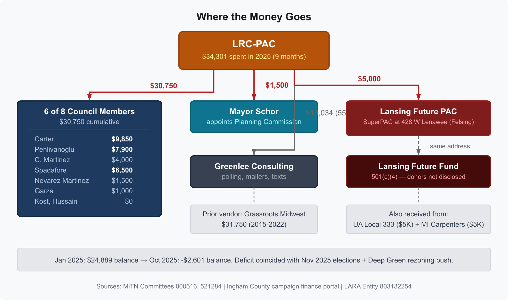

Lansing: The Chamber Funds Campaigns, Runs Advocacy, and Reports $0 in Political Spending
"Increase LRCC PAC donors by 10%"
Lansing Regional Chamber of Commerce, 2025 Strategic Plan, Policy Influence pillar, measurable goal
LANSING, Mich. -- The Lansing Regional Chamber of Commerce's 2024 IRS Form 990 reports $0 in political campaign activity. The same organization operates LRC-PAC (MiTN Committee 000516), which has contributed $30,750 to 6 of 8 sitting City Council members. Its homepage links to a paid advocacy platform that generated 12 template support letters for the Deep Green data center rezoning. Its 2025 Strategic Plan lists "Increase LRCC PAC donors by 10%" as a measurable organizational goal. On its IRS filing, none of this is visible.
The filing also reports $311,344 in "Other fees for services," broken into three categories on Schedule O with no vendor names. The Chamber's lobbying and political expenditure pool totals $208,609. A search of the IRS Political Organization Filing and Disclosure database returns no Form 8871 (Notice of Section 527 Status) for the PAC despite 48 years of operation, and the FEC committee database returns no registration despite the PAC endorsing a U.S. Senate candidate in 2024.
When nearly 200 residents showed up to a City Council meeting to oppose the Deep Green project, the public comment they provided was original, personal, and identifiable. The support the Chamber organized was template-generated, platform-routed, and partially anonymous. The residents' participation is fully visible in the public record. The Chamber's political infrastructure is not.
$0 in Political Campaign Activity
Schedule C, Part I-A of the IRS Form 990 asks for a description of the organization's "direct and indirect political campaign activities" and the dollar amount of "political campaign activity expenditures." On the Chamber's 2024 filing, both fields are blank.
The Chamber operates LRC-PAC (MiTN Committee 000516), formed in 1977, with 200 campaign finance statements filed with the state over 48 years. The PAC uses the same address as the Chamber (500 E. Michigan Ave., Suite 200, Lansing, MI 48912). Steve Japinga, the Chamber's Senior Vice President of Public Affairs at $108,646 per year (IRS 990, FY2021), is listed as the PAC's operational contact at his Chamber email (sjapinga@lansingchamber.org). Tim Daman, the Chamber's President and CEO at $181,253 total compensation (Schedule J, 2024), is the PAC's treasurer.
This is legally permissible. The PAC is a separate legal entity that files with the state, not the IRS. The 990 does not require the Chamber to disclose its PAC's spending. But the effect is that anyone reviewing the Chamber's federal tax return sees an organization with no political activity, no political expenditures, and no political affiliations. The PAC, the $30,750 in Council member contributions, the 86-92% endorsement win rate, the $5,000 transfer to the Lansing Future PAC (MiTN Committee 521284, a SuperPAC registered at the law office of Reid Felsing), and the $19,034 paid to Scott Greenlee, a Republican political consultant and former Michigan GOP vice chair, are all invisible on the 990.
$311,344 in Fees With No Vendor Names
Line 11g on Part IX of the Form 990 captures fees for services not classified as management, legal, accounting, lobbying, fundraising, or investment management. The IRS instructions state that if this line exceeds 10% of total expenses, the amounts must be listed on Schedule O.
In 2021, the Chamber reported $153,968 on this line: 9.3% of total expenses. Schedule O did not itemize it. In 2024, the amount doubled.
| Tax Year | Line 11g | % of Expenses | Schedule O |
|---|---|---|---|
| 2021 | $153,968 | 9.3% | Not itemized |
| 2024 | $311,344 | 15.2% | Three categories, no vendor names |
The 2024 Schedule O entry reads:
COMMISSIONS 148,643.
Lansing Regional Chamber of Commerce, IRS Form 990, Schedule O, tax year 2024
PROFESSIONAL SERVICES/DUES/SUBS 98,829.
STATE OF THE REGION BENCHMARK STUDY 63,872.
The instructions require listing "expenses," not vendors or payees, and the Chamber complied by listing categories. No vendor name appears anywhere in the filing for any of the three. The $311,344 is larger than every line item on the return except salaries ($568,550) and conferences ($341,070).
The Chamber's homepage links to a paid advocacy platform operated by The Soft Edge, Inc. The 12 template support letters submitted to City Council for the Deep Green rezoning were generated through that platform. The Soft Edge is a paid SaaS product (Capterra listing). LRC-PAC's expenditure records on MiTN do not include payments to The Soft Edge. Whether the platform fee is in the $311,344 "Other fees," the $52,969 lobbying line, or paid by another entity is not determinable from the filing.
The Lobbying Pool
Schedule C, Part III-B discloses the Chamber's lobbying and political expenditures under Section 162(e) of the Internal Revenue Code.
| Line | Description | 2021 | 2024 |
|---|---|---|---|
| 1 | Dues from members | $790,700 | $875,516 |
| 2a | Current year lobbying/political expenditures | $47,698 | $52,969 |
| 2b | Carryover from prior year | $89,697 | $155,650 |
| 2c | Total | $137,395 | $208,609 |
| 5 | Taxable amount | -- | $164,833 |
The carryover from prior years nearly doubled from $89,697 to $155,650. The total pool of $208,609 represents the Chamber's accumulated nondeductible lobbying and political expenditures. This is separate from PAC spending, which is reported to Michigan through MiTN, not to the IRS.
A PAC With No Federal Filings
LRC-PAC has operated since 1977. A search of the complete IRS Political Organization Filing and Disclosure database (all four alphabetical bulk data files, covering every electronic 8871 and 8872 ever filed) returns zero results for "Lansing Regional Chamber," "LRC-PAC," or any variation. No filings were found for:
- Form 8871 (Notice of Section 527 Status), the initial registration form
- Form 8872 (Periodic Report of Contributions and Expenditures), the ongoing disclosure form
Under IRC 527(j), political organizations expecting $25,000 or more in annual gross receipts must file Form 8871. LRC-PAC spent $34,301 in just nine months of 2025 (MiTN Committee 000516).
The LRC-PAC's own FAQ document (PDF dated September 27, 2019, recovered from the Chamber's WordPress storage after the FAQ page began returning a 404 error) states: "The PAC is registered with the Michigan Secretary of State and the Federal Elections Commission." A search of the FEC committee database returns no results for LRC-PAC, Lansing Regional Chamber, or any variation.
The same FAQ states that LRC-PAC contributes to federal races including "U.S. Senate" and "U.S. House." In October 2024, LRC-PAC endorsed Elissa Slotkin for U.S. Senate. Under 52 U.S.C. 30101(4), a state PAC making contributions or expenditures exceeding $1,000 to influence federal elections must register with the FEC within 10 days.
PAC Growth as an Organizational Goal
The Chamber's 2025 Strategic Plan is organized around four pillars: Business Value, Policy Influence, Regional Leadership, and Excellent Operations. Under the Policy Influence pillar, the plan lists three measurable goals:
- "80% positive outcomes from our legislative agenda"
- "Increase LRCC PAC donors by 10%"
- "Increase Advance Greater Lansing contributions by 10%"
Growing the PAC's donor base is an explicit organizational KPI, listed in a published strategic plan document alongside legislative and fundraising targets. The Policy Influence section describes the Chamber's approach as "proactive engagement with policymakers, robust advocacy efforts and continuous communication with our members to ensure their voices are heard on issues that matter most to them."
The Chamber's homepage callout for the Deep Green data center campaign uses similar language: "It's important that the Lansing City Council hears your voice on this key issue." The callout links to a paid platform that writes the message for the visitor before they see it.

What Lansing Residents Are Up Against
When residents attend a public hearing in Lansing, they face an advocacy infrastructure that is largely invisible to them. The Chamber does not disclose its PAC contributions when its executives testify at Planning Commission hearings. At the November 5, 2025 hearing on the Deep Green rezoning, three Chamber-connected speakers appeared:
| Speaker | Affiliation | Disclosed | Not Disclosed |
|---|---|---|---|
| Josh Hovey | Bellwether PR (Deep Green's paid PR firm) | Bellwether | LRC-PAC committee member |
| Tim Daman | Chamber President/CEO | Chamber | LRC-PAC Treasurer |
| Steve Japinga | Chamber SVP Public Affairs | Chamber | LRC-PAC operational contact |
Heather Shawa, BWL's Assistant General Manager and CFO, testified in support of Deep Green at the December 2, 2025 hearing without disclosing that she had donated $150 to LRC-PAC (MiTN Committee 000516, June 2025) or that she had been appointed to the Chamber's 2026 Board of Directors the following month.
Michigan has no local lobbying disclosure requirement. There is no law requiring these affiliations to be stated at public hearings. But Lansing residents who showed up to speak at those hearings, who wrote individual letters in their own words, who organized their neighbors and packed a council chamber, were participating in a process where the other side had a 48-year-old PAC, a paid advocacy platform generating template letters, a $2 million annual budget, and a strategic plan that measures success by the percentage of "positive outcomes from our legislative agenda." None of that is visible to a resident reading the meeting agenda.
Methodology
All financial data is from the Lansing Regional Chamber of Commerce IRS Form 990, EIN 38-0745180, tax year 2024, filed August 1, 2025, obtained from ProPublica Nonprofit Explorer. The 2021 filing (same source) is used for year-over-year comparison. LRC-PAC campaign finance data is from MiTN Committee 000516. The IRS Political Organization Filing and Disclosure database was searched via bulk data download (all four alphabetical files). The FEC committee database was searched at fec.gov/data/committees/. The LRC-PAC FAQ PDF (dated September 27, 2019) was recovered from the Chamber's WordPress blob storage after the FAQ page at lansingchamber.org/lrc-pac/ began returning a 404 error. The 2025 Strategic Plan was downloaded from lansingchamber.org/about-us/ on March 14, 2026; all strategic plan language is quoted verbatim from the published PDF. Planning Commission hearing records are from the Lansing CivicClerk portal (November 5, December 2, 2025). Schedule O, Schedule C, and Schedule J entries are quoted verbatim from the filed return.